Cross-Validation Results: Automatic Report and Interpretation
Metrics by Fold
| Fold |
R2 |
MSE |
RMSE |
MAE |
| 1 |
-0.540866 |
1354.028040 |
36.797120 |
29.797932 |
| 2 |
0.619256 |
188.154491 |
13.716942 |
11.802708 |
| 3 |
-0.537721 |
372.874804 |
19.309966 |
16.730060 |
| 4 |
-1.189052 |
500.914978 |
22.381130 |
19.550625 |
| 5 |
-0.377651 |
1178.225767 |
34.325293 |
30.800270 |
Feature Importance (mean ± std)
| feature |
mean_importance |
std_importance |
| PR |
0.199612 |
0.074146 |
| TL |
0.180765 |
0.077359 |
| PL |
0.160525 |
0.128048 |
| CL |
0.096206 |
0.042963 |
| FR |
0.079967 |
0.039020 |
| FL |
0.066500 |
0.014595 |
| OL |
0.065003 |
0.043766 |
| OR |
0.054959 |
0.004653 |
| TR |
0.048424 |
0.012463 |
| CR |
0.048038 |
0.018150 |
Main Plots
feature_importances_mean_std.png
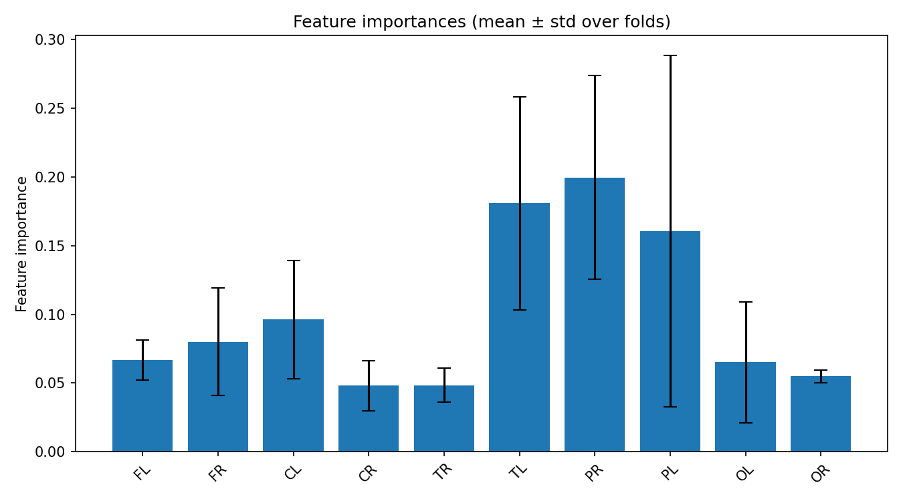
feature_importances_correlation_heatmap.png
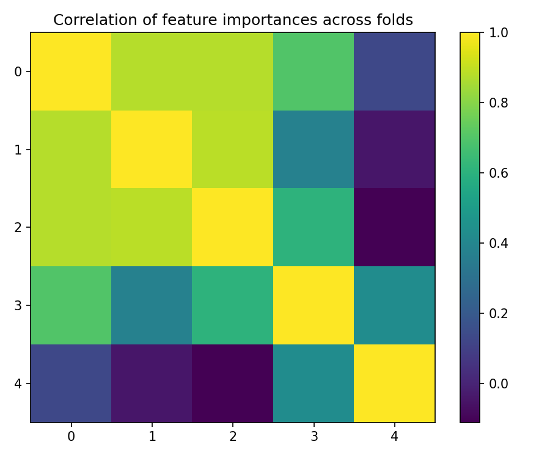
best_fold_2_feature_importances.png
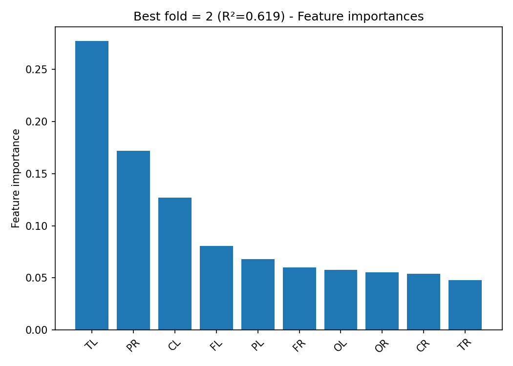
True vs Predicted Scatter Plots (by fold)
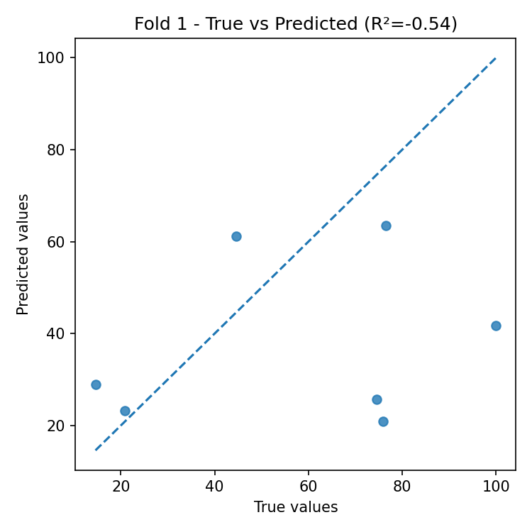
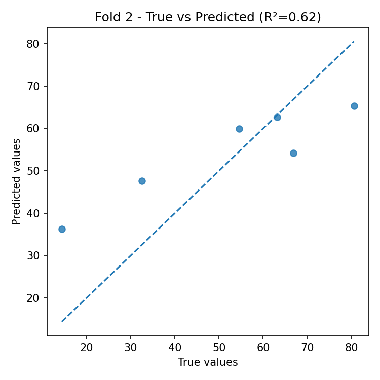
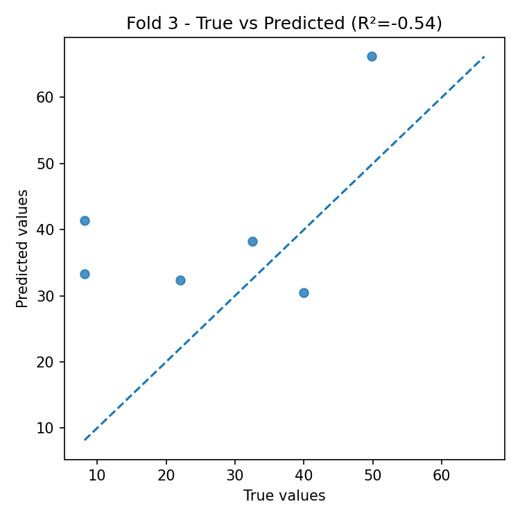
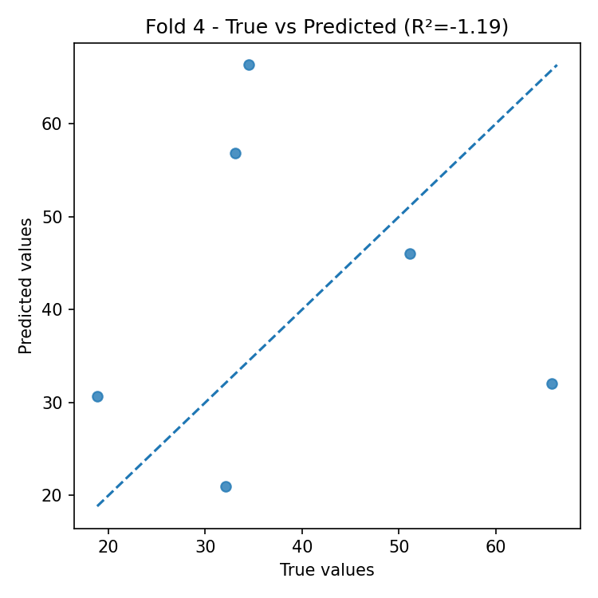
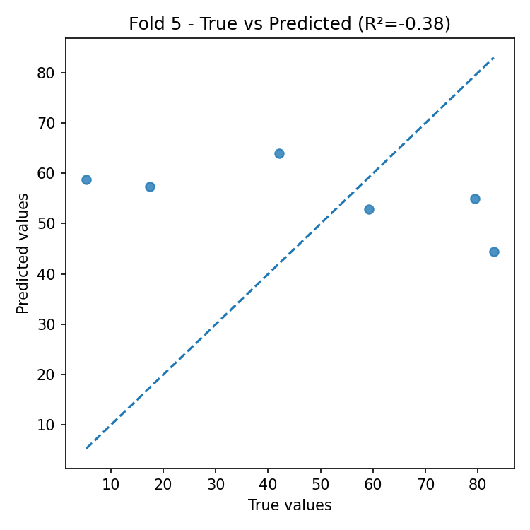
Residual Plots (by fold)
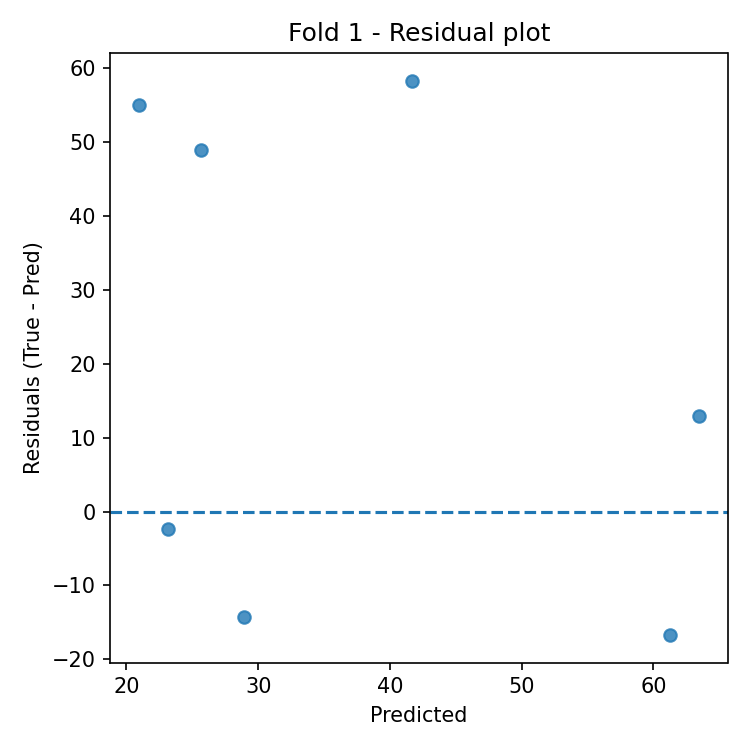
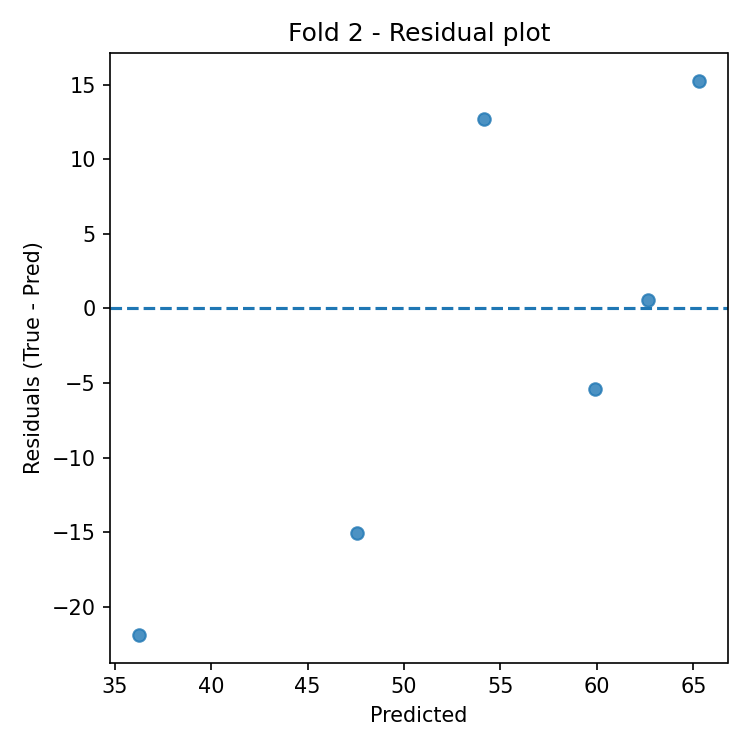
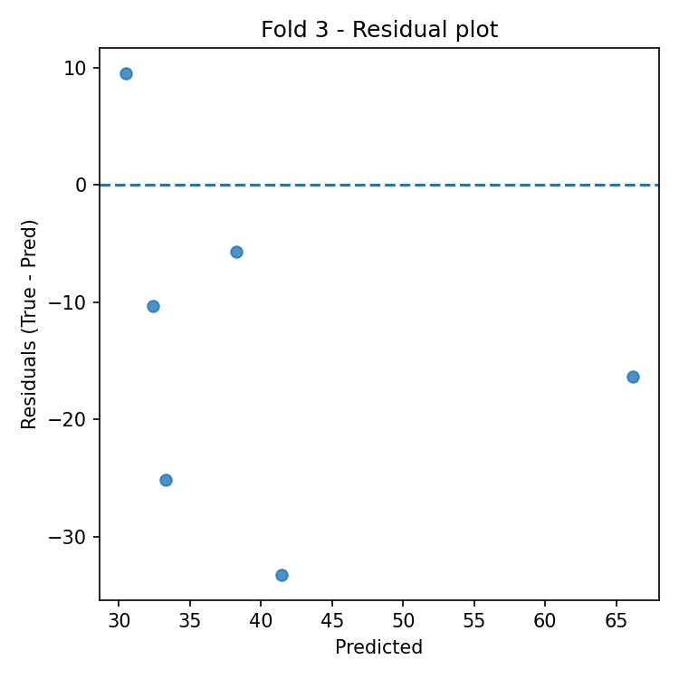
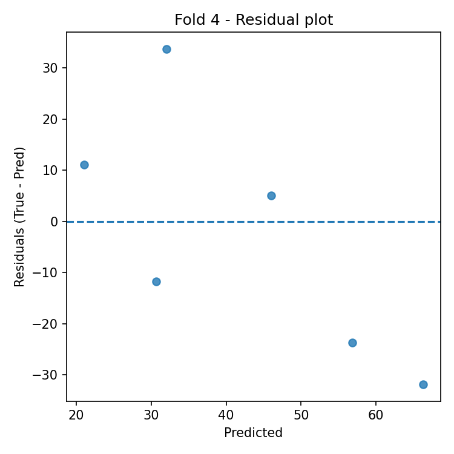
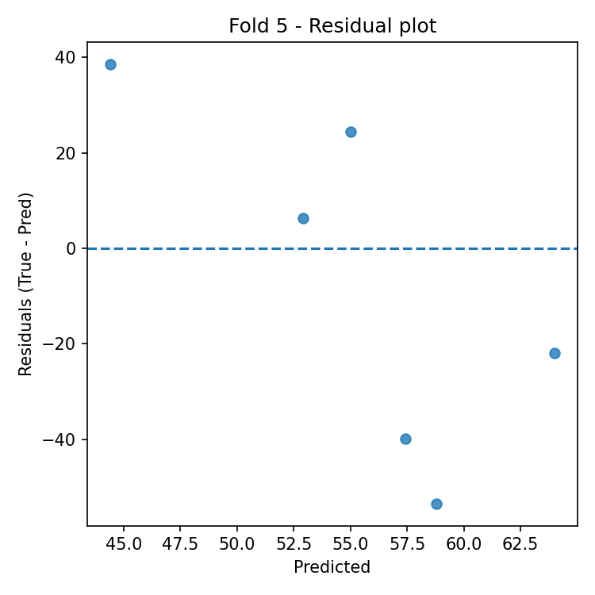
Automatic Interpretation
Overall Performance
- Mean R² across folds: -0.405 (± 0.652).
- Average error: RMSE = 25.306, MAE = 21.736 (same unit as target variable).
Model Stability
- R² variability across folds is high (std = 0.652).
- Average feature importance stability across folds: 0.046 (lower = more stable).
Most Important Features (average across all folds)
- Top-3: PR (0.200), TL (0.181), PL (0.161).
Best Fold
- Best fold: 2 with R² = 0.619.
- In the best fold, the most important features are: TL (0.277), PR (0.172), CL (0.127).
Residual Analysis (best fold)
- Residuals–predictions correlation: 0.789 (0 ≈ absence of linear bias).
- |Residuals|–predictions correlation: -0.710 (positive values indicate possible heteroscedasticity).
- Outliers (|res| > 3·std): 0.